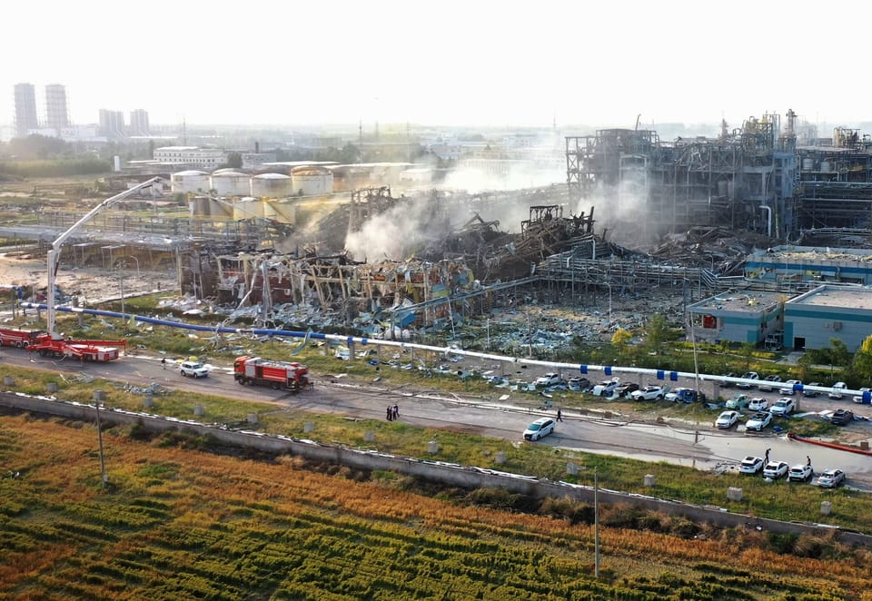

世界苦茶05月28日新闻 | 48条 | 特朗普考虑对俄罗斯制裁

特朗普考虑对俄罗斯制裁 | SpaceX星舰第九次试飞失败 | 李强撮合海湾国家、中国、东盟合作 | 王沪宁会见洪秀柱方文山 | 美国暂停留学生面试预约
每天三件事：
苦茶数据
美元兑人民币：7.18（昨日7.18，前日7.16）
美元兑日元：144.32（昨日142.17，前日142.55）
上证指数：3339（昨日3344，前日3338）
标普500指数：5921（昨日5802，前日5802）
比特币：108912（昨日108396，前日109665）
布伦特原油：64.38（昨日64.53，前日64.97）
中国新闻
• 王沪宁会见洪秀柱方文山 ：中共政治局常委、全国政协主席王沪宁星期二在北京会见台湾在野党国民党前主席洪秀柱等一行人。据台媒报道，台湾流行乐坛天王周杰伦的御用作词人方文山也在现场。据新华社报道，王沪宁星期二在北京会见第二届海峡两岸中华文化峰会台湾嘉宾，当中包括中华青雁和平教育基金会董事长洪秀柱。王沪宁表示，今年是中国人民抗日战争暨世界反法西斯战争胜利80周年，也是台湾光复80周年。他呼吁要共同坚持一个中国原则和“九二共识”、坚决反对“台独”分裂，坚定不移推进祖国统一大业。“我们要共同站稳中华文化立场，携手应对外部挑战，把民族命运牢牢掌握在中国人自己手中。”
• 李强提三方合作愿景 ：中国总理李强说，中国愿同亚细安、海湾国家合作委员会充分发挥“一加一加一大于三”的整体效应，为三方共同发展及繁荣注入强大的动力。李强星期二在首届亚细安—海合会—中国峰会上发言时说，中国愿意同亚细安、海合会一道践行全球文明倡议，凝聚更多和平发展的共识和力量。他指出，中国、亚细安及海合会国家的总人口经济总量占全球约四分之一，将三方的市场充分地联通起来，将催生更为巨大的发展空间和更为显著的规模效应。“中国国家主席习近平指出，冲出迷雾走向光明，最强大的力量是同心合力，最有效的方法是和衷共济。”
• 全球首艘养殖工船下水 ：全球首艘深海养殖工船在广东下水，大湾区将实现“吃鱼自由”。据央视新闻客户端报道，全球首艘自航式水体自然交换型养殖工船“湾区伶仃”号星期二在广东江门成功下水，标志着中国深远海养殖迈向科技牧海新纪元。“湾区伶仃”号深海养殖工船规模宏大，总长155.8米，型宽44米，型深24米，最大吃水深度达20米。与一般的渔船不同的是，“湾区伶仃”号水下部分并非封闭结构，而是由15根方形立柱，拼砌成一个“水下宫殿”。通过挂设渔网，隔出12个独立的养殖舱室，可同时开展多种鱼苗养殖，极大地丰富养殖类型。
• 官媒评翻唱网络神曲 ：针对明星歌手翻唱口水歌，中国官媒称，艺术价值与流量属性并不冲突，技术革新与文化审美也可以并行不悖。中共中央机关报《人民日报》星期二在副刊版“艺海观澜”栏目刊发一篇题为“网络神曲”怎么看的评论文章，提出上述观点。文章称，有一档热门音乐综艺因为发布的歌单上出现不少“网络神曲”而引发热议。有网民质疑专业歌手与节目组为何要选“口水歌”，认为让明星歌手翻唱“网络神曲”无异于“让星级大厨做泡面”，也有人认为“网络神曲”是大众用播放量选出来的结果，好听是王道，各花入各眼，喜欢就好。
• 专家组会议整治内卷竞争 ：中国国务院反垄断反不正当竞争委员会专家咨询组全体会议在京召开，会议强调要综合整治“内卷式”竞争。中国市场监管总局网站星期二发布，中国国务院反垄断反不正当竞争委员会专家咨询组全体会议5月21日在北京召开。会议强调，要紧紧围绕委员会工作部署，紧扣加快构建全国统一大市场、综合整治“内卷式”竞争、加强竞争监管执法等重点任务，主动担当、积极作为，更好履行专家咨询组职责，为提升公平竞争治理能力、维护公平竞争市场秩序贡献智慧力量。
• 中方驳“中国债务责任论” ：针对澳大利亚的洛伊研究所发布一份报告说，由于发展中国家向中国偿还的债务创新高而面临巨大的财政压力，中国外交部称少数国家散布所谓的“中国债务责任论”，避而不谈多边金融机构和发达国家商业债权人，才是发展中国家的主要债权方和偿债的压力源。中国外交部发言人毛宁星期二表示：“不知道这个报告的依据是什么，但是我可以告诉你的是，中国同发展中国家的投融资合作遵循国际惯例、市场规则和债务可持续原则。”毛宁说，少数国家散布所谓的“中国债务责任论”，避而不谈多边金融机构和发达国家商业债权人，才是发展中国家的主要债权方和偿债的压力源。“我想说的是，谎言盖不住真相，公道自在人心”。
• 日指中船违规调查海域 ：日本政府通报中国未经通报在冲之鸟岛附近的专属经济区内进行海洋科学调查活动，违反国际法。综合法新社、日本共同社和日本放送协会报道，日本第三管区海上保安总部通报，星期一下午5时40分左右，日本海上保安厅一架巡逻中的飞机在冲之鸟岛以东约270公里的日本专属经济区内，发现中国海洋调查船“嘉庚”号向海中释放类似缆线的装置，并持续航行。日本海上保安厅的飞机通过无线电用日语和中文等语言向中国调查船发出警告，称“未经事先同意的调查活动不被允许”，并要求其停止活动。
• 山东化工厂爆炸伤亡未明 ：山东高密一化工厂5月27日中午爆炸，目前搜救出5人死亡、19人轻伤、6人失联。事发为友道化学有限公司，主要生产农药，涉及硝基甲基苯甲酸等中间体。应急管理部 副部长率工作组赴现场指导。
• 中央网信办整治“开盒”乱象 ：中国官方将强化“开盒”问题整治，严厉打击非法获取并恶意公开他人个人信息等行为。根据中国网信网星期二发布的通知，中共中央网信办将从阻断“开盒”信息传播、完善预警机制、加大惩治力度、优化保护措施、加强宣传引导等多个维度明确工作要求，督促各地网信部门、各网站平台进一步强化“开盒”问题整治工作。同时，中央网信办还将召开专题部署会议，要求微博、腾讯、抖音等多家重点网站平台，对照通知抓好各项任务落实，履行主体责任，以“零容忍”态度坚决打击“开盒”乱象。
• 李强提中马黄金五十年 ：中国总理李强与马来西亚首相安华会面时表示，愿同马国加强战略沟通，扩大贸易、投资等合作规模。他也提到，愿同马国密切合作，以亚细安—中国—海合会峰会为契机，共同维护自由贸易和多边贸易体制。据新华社报道，李强星期一晚在吉隆坡会展中心与安华会面。李强回顾上个月中国国家主席习近平对马国进行国事访问后，双方一致同意构建高水平战略性中马命运共同体，规划了两国关系发展的战略方向。李强表示，中国愿同马国一道，坚持互尊互信、平等相待、互利共赢，推动各领域交流合作不断走深走实，共同开启中马关系新的“黄金50年”。
• 英媒称解放军具备突袭能力 ：英国媒体报道，中国大陆解放军已显著提升对台发动突袭的能力，包括加快空中与联合作战的节奏、部署新型火炮系统，以及提升两栖与空中突击部队的战备水平。英国《金融时报》星期一引述一名台湾高级军官说，解放军空军与导弹部队目前的作战能力已提升至“可随时从平时转入战时状态”的水平，若中国大陆发动攻台行动，相关部队能立即投入作战。多名台湾国防官员透露，解放军现已常态化训练两栖部队在接近登岛港口的区域进行演练，陆航部队也保持随时可空降台湾的战备状态，同时部署了一种新型多管火箭系统，具备打击台湾全境的能力。
亚太印太新闻
• 台前官警告选举菲律宾化 ：台湾立法院前法制局长罗传贤警告，大罢免行动恐怕会让台湾陷入年年选举的内耗循环，走向“菲律宾化”的困境。罗传贤星期一接受《CNEWS汇流新闻网》直播节目专访时说，若由民进党推动的罢免行动成功，将可能开启恶性循环——未来若立法院多数党轮替，少数党也可循相同模式发动罢免，导致原本四年一次的选举变成年年上演，形成不断内耗折腾的政治困境。他还警告，这种做法将削弱台湾原本以民主宪政为基础的号召力，为了报复仇恨每年搞选举，“这样国势会变弱，台湾恐怕将会菲律宾化”。
• 前国安局长忧美弃协防台 ：台湾前国安局长李翔宙说，若美国不再将协防台湾视为核心利益，台海区域便难以建立有效反制中国大陆军力的强大联盟。他担忧，届时台海战争“打不打、怎么打、打多久”的主导权，将完全掌握在中国大陆手中。据台湾《联合报》星期二报道，李翔宙说，美国总统特朗普与副总统万斯近期先后表示，美军未来的任务将聚焦于“捍卫本土”，不再参与目标不明的军事行动。他认为，这意味着美国将减少对国际事务的干预，削弱多边军事承诺，转而强化导弹防御与边境安全，不再扮演“世界警察”的角色。这势必对全球局势带来深远影响，特别是对冷战时期两极对峙的传统格局构成冲击。
• 韩前总理等被下禁令 ：韩国警方以内乱嫌疑为由对前国务总理韩悳洙、前副总理兼企划财政部长官崔相穆下达出国禁令。新华社报道，韩国警方对近日从总统警卫处获得的总统办公室接待室内部和总统办公室走廊的监控录像进行分析后，发现三名国务委员在出席国会听证会以及接受调查机关调查时所做的陈述与事实不符；为了确认事实，对他们进行传唤调查。警方星期一以内乱嫌疑人身份传唤前国务总理韩悳洙、前经济副总理兼企划财政部长官崔相穆，以及前行政安全部长官李祥敏三人。路透社引述韩国联合通讯社的报道说，这项旅行禁令于5月中旬实施。
• 朝批“金穹”导弹系统 ：朝鲜外交部批评美国“金穹”导弹防御系统项目是一项“非常危险的威胁性举措”。美国总统特朗普5月20日宣布，他已选定“金穹”导弹防御系统的设计方案，并任命了这项雄心勃勃、耗资1750亿美元的计划的负责人。朝鲜中央通讯社星期二报道，朝鲜外交部美国研究所指出，“金穹”计划“是‘美国优先’的典型产物，是自以为是、傲慢专横、专断专行的典型表现，是太空核战争场景”。
• 台湾网红“馆长”陈之汉宣布将要来大陆旅游，正在办理台胞证，将全程直播： 国台办发言人5月28日答问说：相信他此次大陆之行一定会顺利、顺心；只要遵纪守法，台湾同胞来大陆完全可以像回自己家一样，轻轻松松，大家会发现大陆是美好的、先进的、安全的。网红“八炯”则指，陈之汉早前已组织台湾网红在浙江义乌做跨境电商直播，其中有人单场收入千万。陈之汉1979年生，2014年起开设成吉思汗健身俱乐部。其网络直播言辞粗野，多次辱骂习近平、马英九，2023年后转向支持台湾民众党。
科技新闻
• 小米驳玄戒O1非自研传言 ：针对小米自主研发的玄戒O1晶片实际上是向英国晶片设计巨头安谋定制的质疑，小米发文反驳，安谋公司重发新闻稿确认玄戒O1为小米自主研发，删掉“定制”字样。小米公司星期一晚发文称，玄戒O1是小米玄戒团队历时四年多自主研发设计的三纳米旗舰SoC，其中基于安谋最新的CPU、GPU标准IP授权，但多核及访存系统级设计、后端物理实现完全由玄戒团队自主设计完成，并非网传采用安谋提供的完整解决方案。小米声明称，所谓“向安谋定制芯片”更是违背事实的无稽之谈。
• 马斯克证实X Money已进入小规模测试阶段： 当地时间26日，马斯克在社交媒体 X 平台上证实，旗下支付和银行应用X Money即将推出，目前已进入小规模Beta测试阶段。马斯克强调“当涉及人们的储蓄时，我们必须格外谨慎。”根据X公司的规划，X Money将在2025年内逐步扩大测试范围，并计划推出高收益货币市场账户等银行功能。若进展顺利，X平台有望在2026年实现 “无银行账户” 的金融服务生态。X Money可以让用户在平台内完成存款、转账、理财、贷款等全套银行功能。创作者可直接通过X Money接收粉丝打赏，商家能即时结算加密货币收入，用户则获得无缝的支付体验。
• SpaceX星舰第九次试飞失败，于印度洋上空爆炸： SpaceX的星舰原型火箭在第九次试飞中再次失败，于周二在印度洋上空爆炸。该火箭是亿万富翁埃隆·马斯克殖民火星梦想的核心项目。这款有史以来最庞大、最强大的运载火箭于当天晚上6点36分从SpaceX位于得克萨斯州南部、刚刚投票决定改名为“星舰城”的小镇附近的Starbase发射基地升空。由于此前两次试飞都在加勒比海上空解体，工程师和观众对这次发射充满期待。但故障很快显现：火箭的第一级“超级重型”助推器未能按计划溅落在墨西哥湾，而是直接爆炸。
财经新闻
• 加国陷技术性衰退 ：彭博社最新调查显示，加拿大经济或已步入技术性衰退，主因是与美国的贸易争端加剧，导致出口下滑与失业率上升。34名经济学家接受调查时普遍认为，加国经济在今年第二季度将按年率萎缩1%，第三季度再下滑0.1%。由于美国总统特朗普威胁加征关税，部分美国进口商年初已抢先完成采购，令加拿大出口在当前季度骤减，预估跌幅达7.4%。
• 日推3880亿日元补贴 ：日本政府批准一项计划，将从储备资金中提取3880亿日元用于支持受美国关税影响的企业和家庭。这一紧急措施旨在缓解特朗普关税行动对日本国内造成的影响。彭博社报道，根据政府文件，内阁星期二批准这项经济计划的支出，包括2880亿日元的公用事业费补贴和用于帮助地区企业渡过成本上涨难关的1000亿日元。内阁官房长官林芳正称，如果加上日本政策金融公库贷款计划扩大和保险支持等贡献，这项计划的总规模预计将达到约2.2万亿日元。公用事业补贴和地方支持预计将再让总额增加6000亿日元左右。
• 英食品通胀再创新高 ：受营运成本上升推动，英国5月食品通货膨胀率升至一年以来最高水平，连续第四个月上扬，凸显超市业者在维持价格竞争力的同时，也面临日益沉重的财务压力。彭博社报道，英国零售协会星期二发布数据显示，5月食品通胀率达2.8%，高于4月的2.6%，主要受新鲜食品价格上涨影响。通胀上行的背后，是英政府新一轮筹资预算带来的连锁效应。零售商需应对最低工资上涨、薪资税率上调等一系列政策变化。据协会估算，这些措施将为整个行业增加高达50亿英镑的运营成本。
• 日本跌出最大债权国宝座 ：日本财务省星期二公布的数据显示，截至2024年底，日本对外净资产达创纪录的533.05万亿日元，但不敌德国，下滑至世界第二位。这是日本34年来首次失去全球最大债权国的位置。新华社报道，对外净资产是一国持有的海外资产与负债之差。财务省数据显示，截至2024年年底，日本对外净资产比2023年底增加12.9%，连续七年增加。这也是日本对外净资产首次超过500万亿日元。截至2024年底，日本对外资产余额为1659.02万亿日元，比2023年底增长11.4%，连续16年增加。
• 商务部约谈零公里二手车 ：中国商务部据报预计在星期二下午与比亚迪、东风汽车等汽车厂商及相关行业协会进行研讨，讨论近期出现的“零公里二手车”销售现象。路透社引述知情人士报道，此次会议是为了回应近期热议的“零公里的二手车”现象，即虽然登记为二手车，但实际上从未上路行驶的车辆。长城汽车董事长魏建军上星期公开表示，当前有约3000至4000名二手车平台商家在出售“零公里的二手车”。
• 穆迪维持中国A1负面展望 ：国际信用评级机构穆迪维持对中国的负面展望，但重申对中国的“A1”主权信用评级。据路透社，穆迪星期一重申对中国的“A1”主权信用评级，并指出自2023年12月将展望由“稳定”下调为“负面”以来，展望的驱动因素已发生变化，不再是此前关注的地方政府债务及国有企业健康状况。穆迪在声明中表示，在政府有针对性的政策推动下，这些风险已显著缓解，不再对中国的A1评级构成实质性压力。
• 美团与京东的外卖大战加剧至千亿市值蒸发： 自去年年底以来，美团和京东的股票市值已总计缩水大约1000亿美元，凸显出他们在争夺中国外卖市场份额过程中付出的高昂代价。两家公司在香港上市的股票较去年10月初的高点均已下跌逾30%，位居恒生科技股指数表现最差的成分股之列。随着深度求索的技术进步推动投资者转向AI能力更强的公司，加之京东为推广其外卖平台而采取“烧钱”策略，这两只股票表现不佳。美团在周一发布了Q1财报，股价在周二一度下跌逾5%，随后有所回升，但今年仍累计下跌近15%。
• 中欧下月贸易高层会晤 ：中国商务部长王文涛计划于下月初与欧盟高级贸易官员举行会谈，显示在美国关税压力加剧之际，中欧双方正加紧互动以强化经贸合作。中国《环球时报》英文版星期一引述知情人士报道，王文涛将于6月初在法国巴黎举行的世界贸易组织部长级会议期间，与欧盟委员会贸易和经济安全专员谢夫乔维奇会面。知情人士说，双方将就中欧经贸合作这一议题深入交流，并为中欧高层往来做准备。
• 拼多多财报利润大降 ：拼多多公布第一季度财报，公司利润大幅下降，收入增速降至三年来最低水平，因关税壁垒威胁到其业务且商家支持成本上升令利润承压。拼多多周二表示，第一季度收入同比增长 10%，至人民币 956.7 亿元，相当于133.1亿美元。该数字低于市场预期的人民币1044.1亿元，并且是自2022年第一季度以来收入增速最慢的一次。净利润下降47%，至人民币147.4亿元，远低于FactSet汇编的平均预期人民币261.25亿元。拼多多业绩弱于预期之际，该公司正面临着扩大旗下 Temu 平台这一全球性计划遭遇重大挫折的局面。
• 印度对美国的iPhone出口估计飙升了76%： 全球知名分析机构 Canalys 估计，今年四月份，印度出口到美国的iPhone出货量同比增长了76%。这一激增正值苹果加快推进印度制造计划之际。分析师表示，该计划将遭到特朗普总统和北京方面的反对。Canalys的数据显示，四月份从印度出口到美国的iPhone数量约为 300万部。这与同期从中国出口数量形成鲜明对比，后者同比下降约 76%，仅为90万台。
• 美国企业设备支出创六个月最大降幅，关税不确定性挥之不去 ：美国4月扣除飞机的非国防资本财订单环比下降1.3%，为六个月来最大降幅，同比暴跌19.1%，因关税导致的经济不确定性加剧，表明企业设备支出在第二季初减弱。4月核心资本财出货量环比亦下降0.1%。4月耐久财订单下降6.3%。
• 欧盟要求企业提供在美投资计划，特朗普称会谈提议是积极信号 ：两位知情消息人士透露，欧盟官员已要求欧盟主要企业和首席执行官提供其在美国投资计划的细节。在特朗普撤销了威胁对欧盟进口商品加征高额关税的计划后，欧盟正准备推进与华盛顿的贸易谈判。特朗普表示，欧盟提议展开会谈是一个积极的事件，他希望欧洲能够“开放市场”，与美国进行贸易。不过他重申，如果没能达成协议，他仍然可能单方面设定贸易条件。
• 东盟领导人达成谅解，与美国的关税协议不得损害地区利益 ：马来西亚总理安瓦尔表示，东南亚国家领导人周二达成谅解，他们与美国达成的任何双边关税协议都不会损害其他成员国的经济。东盟十国公布了一项五年战略计划，内容包括统一贸易标准和深化金融一体化，旨在推动该区域整体发展成为全球第四大经济体。
• 巴西巴伊亚州劳工检察官5月27日起诉比亚迪及其两家承包商金匠集团和同和智能装备，指控他们在类似奴隶的劳动条件下使用工人并参与国际人口贩运，索赔2.57亿巴西雷亚尔： 比亚迪声明称，该公司始终配合调查，并将在诉讼过程中发表意见。比亚迪还表示，它尊重巴西的法律和国际劳动法规。
俄乌战争
• 普京会晤土外长谈和谈 ：俄罗斯总统普京日前在莫斯科与来访的土耳其外长费丹举行会晤，双方就推动俄乌和平谈判及伊斯坦布尔会谈后的进展深入交换意见。土耳其外交部消息人士透露，此次会谈还涵盖双边经贸与能源合作议题。路透社报道，费丹正在对俄罗斯进行为期两天的正式访问。土方消息人士透露，他于星期一与普京及俄方首席谈判代表梅金斯基会面，并计划于星期二与俄罗斯外长拉夫罗夫举行会谈。
• 俄起草乌克兰和平备忘录 ：俄罗斯外交部星期二说，俄方仍在起草有关乌克兰战争未来和平协议原则的备忘录草案。路透社报道，俄罗斯总统普京5月稍早与美国总统特朗普通话后曾说，莫斯科准备与乌克兰就一份和平协议的备忘录展开合作。他指出，文件将界定潜在协议的基本原则、签署时间框架，以及可能的停火安排。俄罗斯外交部发言人扎哈罗娃星期二指出，俄方正在继续推进草案起草工作，一旦完成，将提交乌克兰方面。 （翻评：不可能是一个可以接受的版本。）
• 中方否认向俄提供军品 ：针对乌克兰方面指称中国向俄罗斯军工厂提供火药等物资，中国外交部回应称有关说法不属实，并强调中国坚决反对无端指责和政治操弄。路透社记者星期二在中国外交部例行记者会上提问，乌克兰对外情报局局长表示已确认，中国正向20家俄罗斯军工厂供应一系列重要产品，包括特种化学品、火药以及专门用于国防制造业的零部件。请问中国外交部这是否准确？外交部对此有何评论？中国外交部发言人毛宁回应时重申，中国在乌克兰问题上的立场一贯、明确，一直积极致力于止战停火，劝和促谈。
• 《华尔街日报》称特朗普考虑在未来几天对俄罗斯实施制裁： 《华尔街日报》5月26日报道称，美国总统特朗普正在考虑本周对俄罗斯实施制裁，以应对俄方持续对乌克兰发动战争。据知情人士透露，这项制裁旨在推动俄罗斯重回谈判桌，但可能不会包括对银行系统的新一轮限制。报道称，如果特朗普发起的最后一次结束战争的努力失败，他也在考虑放弃和平进程。此前，《纽约时报》5月20日援引一位白宫官员称，特朗普之所以迟迟未对俄罗斯实施制裁，是因为这可能妨碍未来的商业和贸易机会，因此他在对俄制裁问题上的立场一直不明朗。不过在5月25日，特朗普谴责俄罗斯总统普京加大对乌克兰的攻击，表示他“对普京感到不满”。
• 北约意识到中国、朝鲜、伊朗与俄罗斯在乌克兰战争中的“轴心”合作： 据意大利《共和报》报道，荷兰首相鲁特在俄亥俄州代顿举行的北约议会大会会议上表示，北约已注意到中国、朝鲜、伊朗与俄罗斯在乌克兰战争中的合作轴心。鲁特指出，中国现在是俄罗斯在乌克兰战争中的关键盟友：“我们知道，中国在向俄罗斯提供军民两用商品，并帮助其规避制裁方面发挥了核心作用。”他还指出，朝鲜和伊朗也正借助这种合作来加强各自的军事力量，并对邻国表现出更具侵略性的态势。鲁特称，朝鲜通过支持俄罗斯换取了大量俄制军事技术，而伊朗则利用来自莫斯科的资金在中东“播下混乱的种子”。
• 英国将拨款30亿美元用于援乌国防，资金来自被冻结的俄罗斯资产收益： 乌克兰第一副国防部长谢尔希·博耶夫表示：“这笔资金不仅在实际层面上具有重要意义，更是一种原则性回应——用冻结的俄罗斯资产所带来的超额收益来强化乌克兰防御，既是对侵略的正义回应，也是对乌克兰自卫权的承认。”根据协议，乌克兰将在2025至2026年间获得这30亿美元。资金将用于采购外国国防产品、维修和保养军事装备、推进乌克兰与国际防务公司的联合项目，以及购买其他关键物资。乌克兰战略产业部副部长戴维德·阿洛扬补充道：“乌克兰本国国防企业的年生产潜力高达350亿美元，但由于资金不足，远未完全发挥。利用冻结俄资的超额利润，将极大增强乌克兰国防工业的生产与修复能力。”
• 俄罗斯最大联合收割机制造商停产，因农民需求崩塌： 俄罗斯最大联合收割机与拖拉机制造商Rostselmash宣布，由于农民无力购买新设备，公司从6月起将暂停生产并削减成本。该公司表示，将自6月起安排全体员工强制休假，这一时间早于往年通常安排在8月和9月的收割季节后。Rostselmash在声明中称：“此举是迫于当前农业经济形势的无奈之举。农民没有足够资金采购所需设备，导致市场需求急剧萎缩。”此外，贷款成本高企、出口关税重、燃料和化肥价格上涨等问题，也使农业在许多地区变得无利可图，进一步削弱了俄罗斯“农业超级大国”的宏图。俄罗斯央行的紧缩货币政策使商业贷款利率维持在约30%的高位，这使得大多数依赖贷款购置设备的农民难以获得融资。
其他新闻
• 加沙援助点爆发混乱 ：加沙人道主义援助分发开始，现场爆发混乱。在加沙南部拉法，由基金会组织的援助分发于5月26日开始。少数人27日早上领到了食品，消息传开后，大批民众前往分发点，下午时已达数十万人。视频显示，人们排长队穿过围挡，且需要被搜查、扫描面部进行身份识别。但随着人群增多，现场爆发混乱，人们推倒围挡并抢夺物资，现场工作人员被迫逃离。随后现场响起枪声和坦克炮火声，一架军用直升机发射照明弹。人们惊慌逃离。少部分设法获得了援助物资，绝大数人空手而归。以色列军方表示，其部队在分发点外的区域鸣枪示警，并且“已经建立了对局势的控制”。
• 以军称拦截也门导弹 ：以色列军方说，它拦截了一枚从也门发射的导弹。法新社引述以色列军方星期二凌晨在社交媒体Telegram上发的信息说：“不久前，以色列多个地区响起警报，一枚从也门发射的导弹被拦截。”此前，以色列声称，星期天和星期四分别击落一枚和两枚从也门发射的导弹。
• 马克龙吁警惕大国冲动 ：法国总统马克龙星期二越南河内向大学生发表讲话，呼吁他们警惕“超级大国的冲动行为”，并重申法国希望在美中对峙之间提供“第三条道路”的战略选择。法新社报道，马克龙此行是为期六天的东南亚访问的一部分，涵盖印度尼西亚、新加坡与越南。他在河内科技大学对约150名学生说，美中之间的地缘政治对抗正在给本区域投下不确定的阴影。他说：“中美之间的冲突是一项地缘政治现实，给本区域带来更大规模冲突的阴影。”
• 利物浦车祸嫌犯被捕 ：英国默西赛德郡警方5月27日称，利物浦汽车撞人事件嫌疑人已因涉嫌谋杀未遂、危险驾驶及毒驾被捕。嫌疑人来自默西赛德郡西德比。此次事件共有65人受伤，其中11人仍在医院接受治疗。
• 美暂停学生签证面试预约 ：特朗普政府5月27日下令全球美国领事馆即日起暂停新增学生与交流访问签证面试预约，以等待即将出台的有关扩大社交媒体审查的新指引。由国务卿鲁比奥署名的领事系统内部电报表明，此次暂停是为落实新一轮社交媒体筛查要求做准备。虽然电报未明确未来筛查的具体标准，但提及与反恐防范及反犹主义政策相关的行政命令。目前，美国政府已针对部分返回美国的学生实施初步的社交媒体审查，尤其是那些可能参与反对以色列在加沙军事行动的抗议活动者。多名国务院官员私下抱怨，以往有关筛查抗议学生的标准模糊，甚至无法确认在X平台发布巴勒斯坦旗帜照片是否会引发进一步审查。这一举措被视为特朗普政府在限制外国学生赴美就读政策方面的又一升级，而众多高校在财政上高度依赖来自国际学生的学费收入。
• NPR起诉特朗普政府 ：NPR和3家地方公共广播电台5月27日起诉特朗普政府，指控政府以报复为目的，停止对NPR和PBS拨款的行动违反了宪法第一修正案。PBS不是起诉方，但表示正考虑包括法律行动的一切选择。白宫未立即置评。
• 英王查尔斯三世5月27日以加拿大国王身份在加参议院演讲，赞扬加拿大作为一股向善的力量，继续在行为和价值观方面树立榜样： 在与长期盟友关系“改变”时，仍将保持“强大和自由”。在谈到加拿大与美国关系时，查尔斯三世说，根本性变化总是令人不安，但这也是加拿大开启二战以来最大规模经济转型的契机。只要坚持加拿大的价值观，加拿大就能建立新的联盟和新的经济。这是加拿大第三次、事隔68年再次举行“御座演说”。加拿大是英联邦成员，此刻请国家元首演讲，是彰显加拿大主权的方式。
• 特朗普扬言可能削减哈佛大学30亿美元资金： 当地时间周一，特朗普升级了他针对哈佛大学的攻势，威胁要撤回30亿美元的资助，并抨击该校部分外国学生是 “激进的疯子”。特朗普说，他将考虑撤销对哈佛大学的资金支持，转而将这笔钱投入美国的技工学校。他在自己的社交平台 Truth Social上写道：“这将是对美国非常棒、也非常迫切需要的一项投资！！”在另一则帖文中，特朗普猛烈抨击哈佛大学的国际学生，称他正在等待哈佛提供“外国学生名单”，以便美国政府判断“有多少激进的疯子，惹是生非的捣乱分子，这些人根本不该被允许重新入境”。哈佛大学已对美国政府提起诉讼，并在社交平台 X 上发文称：“没有国际学生，哈佛就不再是哈佛。”